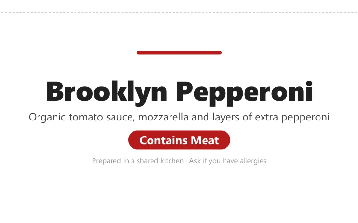
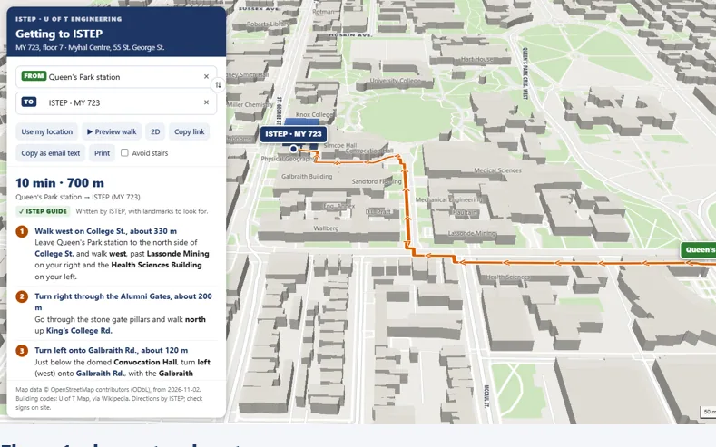
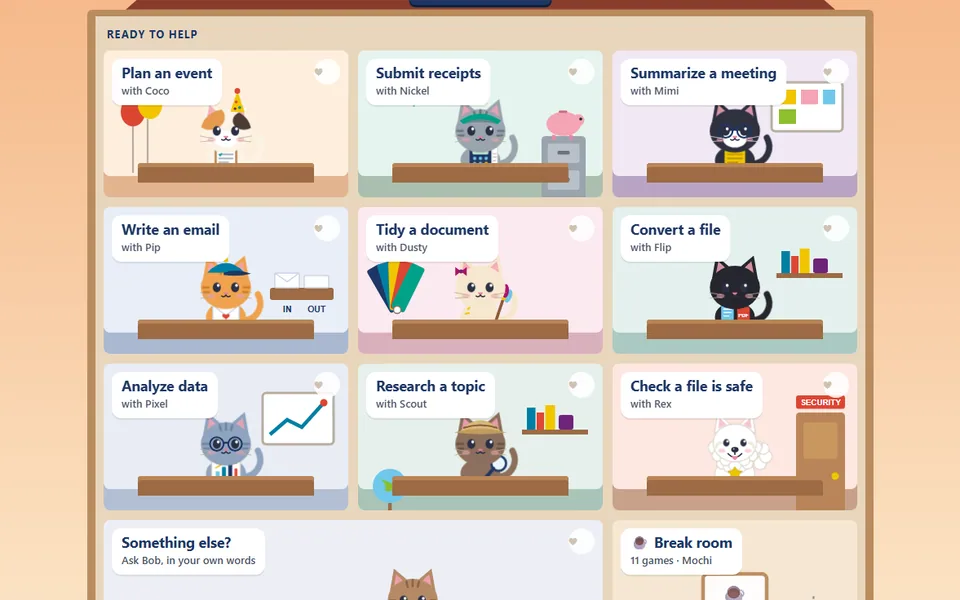

I turn repetitive office work into AI tools people trust.
At ISTEP, U of T Engineering, I find the tasks that eat up the week and build tools that take them over. Built with Claude and Microsoft 365, used by a real team every day.
How I work: I design and direct; Claude helps me build. More on how I work
Featured
In use by my team
Design competition planner
One offline file that replays every move of a 200-person, five-floor event, finds the bottlenecks and suggests fixes it has already tested.
- 200guests across five floors
- 3days, planned move by move
- 9room set-up styles
See how it works
New Reads the building's floor plans from CAD and prints room set-up diagrams.
Selected work

DeliveredEvent operations: catering, tent cards and nametags7 issues flagged before the guests arrived- In useEvents Finance workflowPower Automate, SharePoint and Teams approvals, from quote to paid invoice

BuiltAtlas23 printable guides so visitors find the room
In useVirtual OfficeOffice tasks turned into checked first drafts; a person always sends